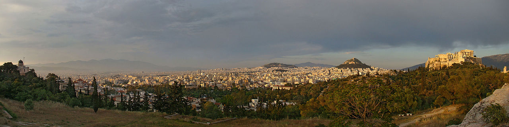

Athènes
Art et Culture
Monuments et musées
le Parthénon sur l'Acropole ;
l’Agora d'Athènes (centre névralgique de la cité antique) et son musée ;
l’Agora romaine avec sa mosquée Fethiye et la tour des Vents (une horloge hydraulique construite au Ier siècle av. J.-C.) ;
l'Héphaïstéion ;
le théâtre de Dionysos ;
le Stade panathénaïque, refait par Hadrien et Hérode Atticus et rénové en 1896 ;
le musée national archéologique d'Athènes qui abrite l'une des plus grandes collections d'art de la Grèce antique ;
le musée de l'Acropole ;
le musée byzantin et chrétien d'Athènes créé pour les collections de la Société archéologique chrétienne ;
la pinacothèque nationale d'Athènes ;
le musée d'art contemporain Goulandrís ;
le musée Bénaki ;
le musée national d'art populaire ;
le musée d'art cycladique ;
le musée national d'art contemporain d'Athènes ;
l’Olympiéion, ou temple de Zeus olympien ;
la nécropole antique de la Céramique et son musée ;
le musée de la Ville d'Athènes ;
le musée d'Histoire nationale d'Athènes ;
le musée juif de Grèce décrit l'histoire et la culture des Juifs de Grèce.
le grand marché d'Athènes ;
le marché aux puces de Monastiráki ;
les rues de Kolonaki avec ses boutiques chics et ses musées d'art contemporain ;
le quartier alternatif d'Exarcheia, avec ses disquaires, libraires et musiciens ;
le mont Lycabette, d'où l'on a une vue panoramique de la ville ;
le quartier de Pláka, le plus ancien d’Athènes et l’un des plus animés ;
la place Syntagma et l’ancien palais royal qui abrite le Parlement.
Natifs célèbres
Thémistocle, stratège qui remporta la victoire à la bataille de Salamine.
Solon, poète et législateur.
Socrate, philosophe.
Platon, disciple du précédent.
Périclès, stratège de la ville de -451 à -429.
Denys l'Aréopagite.
Irène l'Athénienne, « empereur » des Romains.
Philothée d'Athènes, sainte patronne de la ville.
Constantin Papachristopoulos dit Costi est un sculpteur grec né le 27 novembre 1906 à Athènes et décédé le 3 mars 2004.
Dimitri Kitsikis, historien (1935 – ).
Melina Mercouri, actrice, chanteuse et femme politique (1920–1994).
Giánnis Antetokoúnmpo, joueur de basketball (1994 – ).
Eléni Lambíri (1889-1960), compositrice et cheffe d'orchestre.
Vassilis Alexakis (1943-2021), écrivain franco-grec.